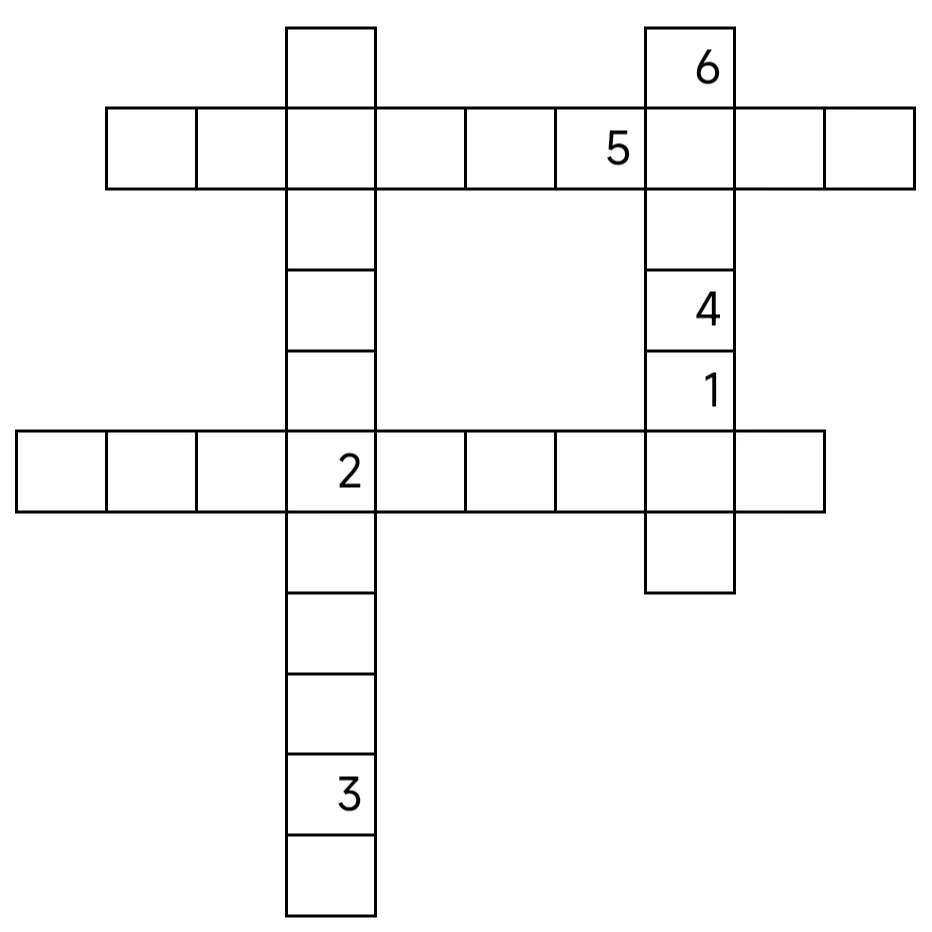

对酒当歌
新年配美酒，越喝越有，大步流星四方走
1
2
3
4
5
6
7
8 9
10
11
12
13 14
15
16 17
18 19
20
21
22
23
24
25
26
27
28
29
30
31
32 33
34 35
36
37
38
39
40
41
42
43
44
45
46
47
48
49
50
51
52
53
54
55
56 57
58
59
60
61
62 63
64
65
66
67 68
69
70 71
72
73
74
75
76
77
78
79
80
- 来自《?义之?》，大地上?一种电磁波
- 是最早在???地区发现的一种蓝色悬浊?
- 在“start"前面出现的数字一般称作什么
- ?会被推?的老人，是一种玩具
- 双消以后仅剩一个笔画，原名叫“?丘”
- 三?三?手中的一招，该成语含有贬义
- 从从从从
- 减去两个第一部分和一个第?部分后变成产生相反的?义
- 唐?强曾出?的小说改编而成的影视作品
- 踏上研究某种染色体遗传病的?路的科学家
- 按里?或时间?费的汽?
- 自?这个东西可以说是不自??
- 史上第一位?级英雄
- 任天堂制作的一款经典双人红白机游戏
- 是??运动的相反方向
- 不能开的?，靠?来运动
- 是测定?的来?的不对称形状的仪器
- 用来形容樱岛麻衣的?体
- 在这首歌曲中，主人公自知有一双?????
- 一种文具，也叫“改??”
- 与本次活动的主题相关
- 长度为?，与任意??平行
- 顾名思义，由两条?无法构成，需要更?
- 看似和几何图形相关，实则指废?
- 表示没?，是?构的
- 一本?书，避免你在战场上被打成??
- 一本小说，意为“丧?为?的资?”
- ?张?正常来说有?个?头，但是这里多了一个?头
- 去皮后形似大蒜的水果
- 边走边给钱
- ??渊之子
- 和大自然的?蠢搬运工有关的故事
- 一个用来?弄他?的?日
- 是世界上最?的?，散发腐尸的恶臭
- 产卵后就会?上丧命的动物
- 比??更让人讨厌的东西
- 桌游机制之一，通常具有有限的点数。比心?要强
- 小??是其私生子
- 似乎是?有君主中最智慧的一位
- 一种植物，也是?人向往的某种联盟
- 《清异录》记载的江湖间的一种野?，其叶纠结呈??状
- 体能不??就不要爬这里
- ??的下一级单位，会感染发炎
- 引领齐国走向强盛
- 旋转插入?母的物体
- 狼人杀职业之一
- 了解一种颜色，也指一类人
- 花?数百年才被证明的伟???
- 一种和?混合后可以凝固的材料
- 一种日常花销
- 看起来是把??切成?状，但通常需要先风干
- 它在说：“无间的爱与复仇”
- 46无法进入的?
- 海军本部大将之一
- turf turf turf
- 这种??有?于储存洪?
- ?蒸?和?炭高温反应生成的?体
- 可以移动的?源
- 有关赞成反对的语言类社交游戏
- ?色的?，也指没毛病
- 由32张?组成，分为文?和武?
- ?表最强大的黑巫师，连名字都不能提
- 本题下一步骤要寻找的内容经常?入的东西
- 日?的?士，杀人无数
- 穿着靠进行?动演出的人
- “X”在这上面尤为重要，暗示着??所在
- 俄罗?的著名饮料
- ??在??，??而后?至
- 在绿茸茸的场地上进行的体育运动
- 其发源地为???亚
- 与意大?在?图上接壤
- 只是?在水中，并不会?的一种??
- 长得都不一样，翻个面又都一样了
- 两个人?互?到对方身上
- ?某种植物作为标志的国家
- 胜利女神现在在哪里
- 由水和厕所构成的一场战役
- 不可损坏之?
- 并非出自真心的举动
- ?制自?，一心为?
